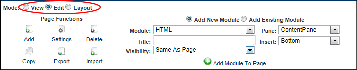

- Click the Minimize
 button to hide the Control Panel.
button to hide the Control Panel. - Click the Maximize
 button to display the Control Panel.
button to display the Control Panel.
The Iconbar provides a single interface from which authorized users can access page and module management tools, shortcuts to six common administration tasks and quick links to the Admin and Host Consoles.
How to hide or display the Iconbar using the Maximize/Minimize button. This functionality isn't available to Module Editors. The default visibility is set by Administrators.

The IconBar Minimized
SuperUsers can click either the  Admin or
Admin or  Host links (top right) to view the Admin Console or Host Console respectively.
Host links (top right) to view the Admin Console or Host Console respectively.
Administrators can click the  Admin link (top right) to view the Admin Console page.
Admin link (top right) to view the Admin Console page.

The Iconbar Control Panel as displayed to SuperUsers
How to set the mode of the Iconbar Control Panel. Note: The Preview mode that displays the current page as it would be viewed on a specified mobile device is not available on the Iconbar.

The Iconbar Mode Setting
The Page Functions section (left) is accessible to Page Editors, Administrators and SuperUsers. It enables users to add new pages
The Module Insertion section (center) is accessible to Page Editors (users with Add Content or Full Control permissions in Evoq Content and Evoq Content Enterprise, or Edit Page permissions in DNN Platform) and Administrators. It enables these users to add new or existing modules as well as set the role visibility, title, pane and alignment of the module being added.
Tip: Users must be authorized to deploy a module and be a page editor to add a module to a page.
Page Editors can access this icon:
Administrators and SuperUsers can access these additional icons: